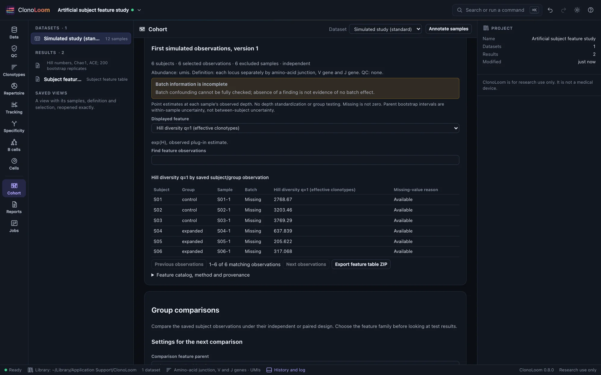
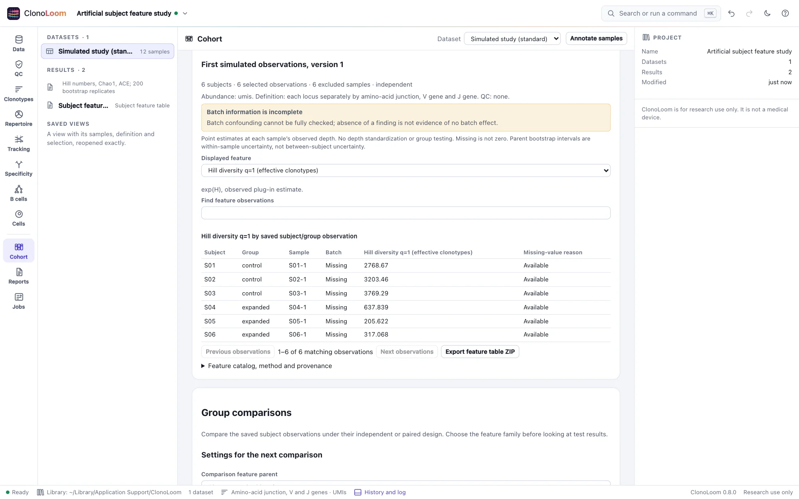

Subject feature tables
A cohort table starts with the selected biological observations. Choose a saved study design and a saved diversity result to retain one sample per subject and selected group, with every value traceable to its source analysis.
Choose the evidence
- Annotate subjects and groups, then check and save a named Cohort study design. Select repeated samples explicitly with reasons; no library is automatically chosen or pooled.
- In Repertoire, measure diversity under the desired clonotype definition and QC filter.
- In Cohort, scroll to Subject feature table. Choose the exact saved design version and diversity parent, then build the table. Both must refer to the same dataset and complete source sample set.
The saved design's annotations and exclusions are used even if current annotations have changed. Save a new design version to use changed annotations. One row is one selected subject/group observation. An independent design has one row per subject; a paired design has two, linked by the same subject identifier. These rows are not independent replicates in a paired analysis.


Values and units
The fixed version 1 catalog contains assigned abundance, observed richness, Shannon entropy, observed Hill diversity of orders 1 and 2, Pielou evenness, Shannon clonality, Simpson concentration, Gini–Simpson index, Gini coefficient, largest-clone share, top-10-clone share and estimated sample coverage. The on-screen catalog and exported JSON define every formula and unit.
- Assigned abundance is the sum of positive clonotype abundances after definition and QC, in the parent's cells, reads, UMIs, templates or sequences. It is not raw sequencing depth.
- Shannon entropy is in nats; Hill diversity is in effective clonotypes. Shares and coverage are fractions, not percentages.
- Coverage estimates abundance completeness, not the fraction of all clonotypes found. It requires whole abundances.
- Empty samples retain zero abundance and observed richness. Other metrics are missing. Single-clone samples have undefined normalized Shannon evenness and clonality. Missing estimates retain their reasons.
Switch the displayed feature to inspect observations, or search subject, group and sample labels. Tables show up to 50 matching rows per page. The CSV always includes all selected observations and all 13 features, with exact round-trip numeric precision. Display rounding does not alter exports.
Interpret the table
These are point estimates at each sample's observed depth. Observed richness and diversity depend on depth; the table does not rarefy, standardize coverage, average libraries, pool counts, impute missing values or test groups. Parent bootstrap intervals remain in the saved parent document and describe within-sample measurement uncertainty. They are not confidence intervals for differences among subjects. Use a saved table for subject group comparisons under its explicit independent or paired design.
The table is a first set of sample/subject features for external modeling. Receptor-level, usage and other feature families are outside this initial catalog. Choosing selection rules after looking at outcomes can introduce bias; declare the scientific selection before using the table.
Reopen and export
The result is an immutable artifact in the project Results list, with undo/redo and a saved methods description. New tables require an opened source dataset to bind source fingerprints and notices. Saved tables reopen and export without the original files or diversity artifact.
Export feature table ZIP includes subject-features.csv, catalog.json, cohort-features.json, manifest.json and NOTICE.txt. The JSON retains all design annotations and exclusions, the exact parent measurements and manifest, definition, QC, abundance unit, source fingerprints, method versions and citations. Empty CSV numeric cells have companion _missing reason columns; JSON uses null. Provider terms remain attached to derived results.
Remote clients discover saved design versions and artifacts with get_state, then use build_cohort_features with explicit design and diversity IDs. See Remote control.
Sources and validation
Jost (2006) distinguishes entropy from effective diversity. Coverage follows Chao and Jost (2012); diversity sampling methods follow Chao et al. (2014). This table copies already validated measurements rather than refitting them. Catalog selection, missing-value labels and the exact join are ClonoLoom policies.
An independent Python standard-library reference calculates all columns from raw abundances, including pairwise Gini differences. Controls include empty, single-clone, equal, skewed, fractional and scaled samples, singleton coverage and more than ten clones. Tests also verify selection, paired identity, missing versus zero, checksum refusal, durable replay, source-free export and CSV/JSON round trips.